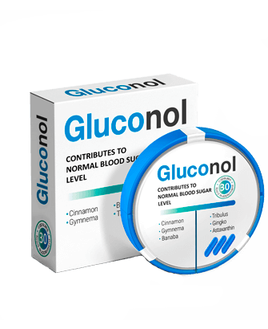

Dr. Canning si říká bývalý diabetik a ujišťuje, že stav kompenzace není vůbec tím konečným snem. Abychom se dozvěděli více, domluvili jsme si rozhovor s renomovaným specialistou.
Dobrý den pane doktore. Nemáme tolik času, kolik bychom chtěli, tak začneme tím hlavním. Řekněte nám prosím, jak léčíte cukrovku?
Nejdůležitější v tomto případě je obnovit zdraví kardiovaskulárního systému.
Lidské tělo má obranný systém, který v naléhavých případech omezuje výživu některých orgánů. Klíčové systémy jsou naopak vždy zásobovány glukózou, nepotřebují žádný inzulín. Jinými slovy, diabetes 2. zpočátku postihuje pouze orgány závislé na inzulínu, jako jsou játra nebo tuková tkáň.
Zvýšená koncentrace glukózy a nerealizovaného inzulinu však ovlivňuje stav krevních cév a kapilár. Když se průtok krve ztíží, naše nejdůležitější orgány přestanou přijímat výživu. Proto je první věcí, kterou je třeba udělat, abychom se vyhnuli katastrofálním následkům k čištění stěn krevních cév.
Pravidelná očista těla je cesta ke zdravému a šťastnému životu, o tom jsem přesvědčen.
Takže si myslíš, že abys porazil cukrovku, musíš nejdřív obnovit cévy, a ne slinivku?
Je to tak. Pokud budete bezmyšlenkovitě stimulovat produkci inzulínu, ovlivní to složení krve ještě více. Jednoduše posunete hormonální rovnováhu a zvýšíte zátěž jater a ledvin.
Představte si staré potrubí. I když přes něj propustíte tu nejčistší vodu, skončíte se špinavou oranžovou kaší, protože trubky jsou plné rzi a hniloby. Je mnohem rozumnější je nejprve opravit a pak přemýšlejte o tom, co poteče.

A co přesně znečišťuje naše potrubí?
Dokážu odhadnout, jakou odpověď očekáváte. Nezdravé jídlo a nedostatečný režim si samozřejmě vybírají daň na zdraví. Ale nemyslete si, že všichni diabetici jsou jen milovníci hamburgerů a cukrovinek. Hlavním faktorem je věk při rozvoji takových onemocnění.
Ale dá se to kompenzovat včasnými opatřeními. Pravidelně absolvuji očistný kurz a cítím se skvěle. Plánuji se dožít sta let a nezastavit se u toho. Trpěla jsem ale i cukrovkou 2. typu, kvůli ní dokonce neboť jsem na čas odešel od vyučování a přijímání pacientů. Ale to je záležitost před 20 lety. Nyní již žádné příznaky nepozoruji, cukr mám stabilní, vůbec nestoupá nad 7 mmol/l.
O jakých příznacích to mluvíš?
Únava nejprve.
Ospalost, zmatenost a ztráta paměti mě velmi vážně zasáhly. Mnohem více morálně, samozřejmě. V tomto stavu mi byla i jedna přednáška výkon, takže jsem musel odejít.
Žízeň a časté močení také ovlivňovaly kvalitu života. Nemáte ani ponětí, kolik času a úsilí se spotřebuje na tak jednoduché věci. Je to jako budík, který každých pět minut zvoní a trhá pryč od jakékoli činnosti, včetně spánku.
Neustálý pocit hladu přetrvával celé dny a tradiční diabetická dieta výrazně omezila můj jídelníček. V důsledku toho jsem úplně ztratil potěšení z jídla.
Necitlivost končetin byla věc, která mě děsila nejvíc. Viděl jsem, jak se u pacientů vyvinuly vředy, takzvaná diabetická noha, svým vlastním způsobem. tato nemoc byla děsivá, když dokonale víte, k čemu vede.
K čemu?
Hlavní komplikace diabetu:
- Diabetická noha
Vše začíná brněním dolních končetin, pak se snižuje citlivost, to je odumírání nervových zakončení. Pak vzniká gangréna, nejčastěji vede k amputaci.
- Retinopatie
Oční kapiláry se rozpadají a dochází ke krvácení. V těžkých případech se sítnice odloučí a pacient navždy ztratí zrak.
- Trombóza
Diabetes zvyšuje pravděpodobnost srdečního infarktu a mrtvice 2-3krát v závislosti na fázi. Je smrtelný a riziko se zvyšuje pouze s věkem.
- Nefropatie
Selhání ledvin se vyskytuje u 7 z 10 diabetických pacientů.
- Jaterní patologie
Diabetes vyvolává širokou škálu problémů: tukové onemocnění, cirhózu a dokonce rakovinu. Mechanismus je stejný jako u onemocnění jater: účinnost filtrace klesá a jaterní buňky jsou nahrazeny pojivovou tkání.
- Kóma
Játra se snaží pomocí ketolátek kompenzovat problémy s metabolismem sacharidů, jedná se o speciální látky, které aktivně štěpí tuky, aby získaly energii odkudkoli. A jelikož játra a ledviny jsou již ve špatném stavu, ketolátky se nezbavují a způsobují intoxikaci. V důsledku toho nervový systém neodolá.

A jak s tím můžeš bojovat?
Nejlepší je své tělo do takového stavu vůbec nepřivádět. Včasná léčba změní cukrovku ze smrtelného nebezpečí v dočasné obtíže, nepříjemné, ale řešitelné.
Před 20 lety, kdy byla moje metoda spíše experimentální než obecně přijímaná, jsem si musel bylinky shánět a sbírat sám, objednávat vzácné suroviny ze zahraničí a vyrábět odvary. Nyní se ale čištění nádob stalo rozšířenou praxí.
Na základě mého vývoje (i když nejen mého, samozřejmě) vytvořili vyvážené složení. Výsledkem byl vysoce kvalitní a levný produkt, který nedávno vstoupil na mezinárodní trh, včetně toho mexického.
Jakou drogu máte na mysli?
, samozřejmě. Jedná se o přípravek na přírodní bázi obsahující koncentrované výtažky z léčivých bylin. Na rozdíl od jakýchkoli chemických pilulek, bez kterých ani já neumím číst slovník, nezpůsobuje žádné vedlejší účinky. Ve skutečnosti jej proto doporučuji svým pacientům.

Jeho primárním účinkem je čištění cév, receptura však obsahuje složky s hypoglykemickým účinkem, které přirozeně snižují hladinu glukózy v krvi. stabilizuje hladinu cukru v krvi během jednoho ošetření.
Promiňte, myslel jsem, že jsi o něm věděl už dávno.
Ne, bohužel. Ještě jsem to v lékárnách neviděl.
Není divu. Za prvé, se začal prodávat do zahraničí poměrně nedávno, před necelým rokem. Pokud vím, v EU již prošel klinickými zkouškami.
Pozn. redakce: Výsledky těchto studií jsme pro přehlednost zahrnuli.
Podle kontrol z monitorovací stanice GMP jsou výsledky testu následující:
- Stabilizace hladiny cukru v normálním rozmezí: 62 % subjektů.
- Zvýšení účinnosti hypoglykemických léků na udržovací terapii: 93%
- Cítím se lépe: 80 % subjektů.
Test 2 po měsíci užívání .
- Stabilizace hladiny cukru v normálním rozmezí: 92 % subjektů.
- Zvýšení účinnosti hypoglykemických léků na udržovací terapii: 96%
- Cítím se lépe: 92 % subjektů.
Test 3, po 3 měsících užívání .
- Stabilizace hladiny cukru v normálním rozmezí: 98 % subjektů.
- Zvýšení účinnosti hypoglykemických léků na udržovací terapii: 97 %
- Cítím se lépe: 98 % subjektů.
Žádné vedlejší účinky: 100 % subjektů v průběhu studie.
A za druhé se neprodává v lékárenských řetězcích. Naopak výrobce se prodeji v lékárnách brání a pečlivě hlídá, aby nezískali překupníky. Víte, lékárna je stejná prodejna jako každá jiná a každá má své vlastní marže a podmínky. Nejlepší způsob byl tedy prodávat lék přes internet.
Pokud vím, na aktuální várku je sleva 50%, cena se navýší od další várky.
Nabídka platí do
Stačí zanechat poptávku a operátor Vám zavolá zpět. Postará se o to, abyste si lék objednali pro osobní potřebu, poradí se s Vámi a zkoordinuje doručení.
Děkuji, Dr. Canning. Máte pro naše čtenáře poslední slovo, nějakou radu?
Ano, chci. Nenech své zdraví přijít nazmar, je snadné promeškat okamžik. Myslím, že je to ono.
 Sebastián
Sebastián Josef
Josef Marek
Marek Jakub
Jakub Matouš
Matouš Alena
Alena Regina
Regina
Děkuji za článek. Už jsem objednal . Poradce na telefonu říkal, že zásoby končí. Tak si pospěšte, pokud chcete ušetřit!